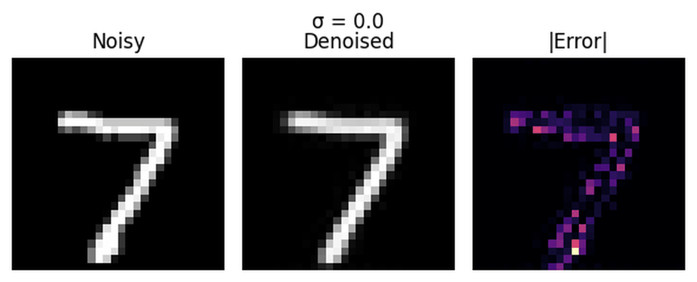

UNet is an encoder–decoder convolutional network with skip connections. The
left half of the architecture repeatedly downsamples the feature maps, moving from large,
high-resolution activations to smaller, low-resolution ones, while the right half performs
the reverse operation and upsamples back to the original resolution. Skip connections copy
encoder features across to the corresponding decoder blocks so that global context from the
deepest layers is combined with fine spatial detail from earlier layers, as sketched in the
overview diagram below.
The implementation used in this project follows this pattern with three resolution levels
tailored to 28×28 MNIST digits. Simple building blocks such as convolution with BatchNorm
and GELU, strided convolutions for downsampling, transposed convolutions for upsampling,
average pooling for flattening, and feature concatenation are composed into higher-level
ConvBlock, DownBlock, and UpBlock modules. These modules
are then arranged into an encoder–bottleneck–decoder chain with skip connections.
1.2 Using the UNet to Train a Denoiser
This section studies how a single-step UNet denoiser behaves as the strength of the added noise
changes. The noise level is controlled by a parameter σ: small σ produces mildly corrupted
digits, while large σ produces images that are almost indistinguishable from pure noise. The
goal is to understand for which σ the model can still reliably recover the underlying digit and
how its errors are distributed in space.
The first visualization fixes one handwritten “7” and applies Gaussian noise with
σ in {0.0, 0.2, 0.4, 0.5, 0.6, 0.8, 1.0}. For σ = 0.0 the digit is perfectly clean. As σ
increases, random speckling appears, gradually thickening into a salt-and-pepper pattern that
obscures the strokes. Around σ = 0.5 the digit is still recognizable but heavily corrupted,
whereas by σ ≈ 0.8–1.0 most of the structure is lost and only a vague brightness pattern
remains. This sweep shows that moderate noise levels still preserve semantic information about
the digit, while the highest noise levels effectively erase it.
Noise-only σ sweep for a fixed digit: increasing σ gradually destroys fine stroke structure
and eventually leaves an image that resembles pure noise.
To relate this corruption to the denoiser’s behavior, a σ-sweep GIF shows three panels for the
same digit and each noise level: the noisy input, the UNet’s denoised output, and a heatmap of
the absolute difference between them. A static triptych at a representative σ highlights the
layout: the left image contains the noisy digit, the center image is the reconstruction, and the
right image encodes where the model changed the pixels. For small σ, the input already looks
clean, the reconstruction nearly matches the original, and the error map is almost empty. As σ
increases, the noisy input becomes increasingly scrambled, yet the denoised output remains a
sharp, well-formed “7” up to moderate σ, with errors concentrated in a thin band along the
stroke edges. At the largest σ, the model still produces a digit-shaped pattern even though the
input contains almost no visible structure, and the error map becomes bright across most of the
strokes, reflecting how much the prediction must deviate from the true image.

σ-sweep with noisy input, denoised output, and error heatmap for a single digit: at moderate
noise levels the UNet restores a clean digit with errors confined to stroke boundaries, while
at very high noise levels it must effectively hallucinate the entire digit.
The final visualization aggregates these per-pixel errors over the entire test set at σ = 0.5.
For each location in the 28×28 grid, the absolute difference between the denoised output and
the clean digit is averaged across many examples, and the result is shown as a heatmap. Dark
regions correspond to pixels where the UNet is almost always correct; bright regions indicate
pixels where its predictions are less reliable. The resulting image resembles a blurred template
of a typical MNIST digit: the outer corners, which are usually pure background, remain nearly
error-free, while the central vertical band and arcs—where the strokes of digits 0–9 tend to
pass—show systematically higher error. This pattern indicates that the model is extremely
confident on blank background but inevitably uncertain about the exact thickness and placement
of the handwritten strokes, which is precisely where different digits differ from one another.
Mean absolute error over the test set at σ = 0.5: errors concentrate along the typical stroke
region of MNIST digits, while the background is reconstructed with almost no error.
1.2.1 Training with σ = 0.5
Train the UNet as a denoiser for images noised at
σ = 0.5,
and monitor both the loss and qualitative outputs.
Deliverables:
A training loss curve recorded throughout training for σ = 0.5.
Example denoised test digits at noise level σ = 0.5 after epoch 1 and epoch 5.
1.2.1 · σ = 0.5 Training Results
Training Loss Curve
Denoised Test Digits (Epochs 1 & 5)
1.2.2 Out-of-Distribution Testing
Evaluate how the σ = 0.5 denoiser behaves when asked to denoise digits corrupted with
various noise levels it has not specifically been trained on.
Deliverable:
For a fixed test digit, show denoiser outputs for
σ ∈ {0.0, 0.2, 0.4, 0.5, 0.6, 0.8, 1.0}.
1.2.2 · Out-of-Distribution σ
1.2.3 Denoising Pure Noise
Retrain the denoiser to map pure Gaussian noise directly to clean digits and then inspect
what kinds of images it produces.
Deliverables:
Training loss curve while training on pure noise inputs.
Sample outputs from denoising pure noise after epoch 1 and epoch 5.
A short explanation of the visual patterns you observe and why they might arise given
the MSE objective.
1.2.3 · Denoising Pure Noise
Training Loss (Pure Noise)
Generated Samples from Pure Noise
Part 2 · Training a Flow Matching Model
In this part you extend the UNet with time and class conditioning, train a flow matching model,
and then sample digits by iteratively denoising from pure noise.
2.1 Adding Time Conditioning to UNet
Describe how you inject the scalar timestep t into the UNet (FCBlocks, where you
multiply or modulate intermediate features, normalization of t, etc.).
Include any diagrams if you want.
2.2 Training the Time-Conditioned UNet
Train the time-conditioned UNet to approximate the flow between noisy samples and clean digits
across timesteps.
Deliverable:
A training loss curve for the time-conditioned UNet over the full training schedule.
2.2 · Time-Conditioned UNet Training
2.3 Sampling from the Time-Conditioned UNet
Use the sampling algorithm to iteratively denoise from pure noise and visualize digits
generated after different numbers of training epochs.
Deliverables:
Sampling grids (or belts) from the time-conditioned UNet after 1, 5, and 10 epochs of training.
Explain how you extend the UNet to take a class one-hot vector, where you inject class
information, and how classifier-free guidance is implemented by occasionally dropping the class.
2.5 Training the Class-Conditioned UNet
Train the class-conditioned UNet on MNIST digits, using both time and class inputs, with
occasional unconditional training for classifier-free guidance.
Deliverable:
A training loss curve for the class-conditioned UNet across all epochs.
2.5 · Class-Conditioned UNet Training
2.6 Sampling from the Class-Conditioned UNet
Use classifier-free guidance to generate digits conditioned on class labels and study both
convergence speed and the effect of the learning rate scheduler.
Deliverables:
Sampling results from the class-conditioned UNet after 1, 5, and 10 epochs, with several
samples per digit class (e.g., 4 instances of digits 0–9).
An additional run without the exponential learning rate scheduler:
show its samples and discuss what you changed to keep performance comparable.
2.6 · Class-Conditioned Sampling & LR Scheduler Ablation
Sampling with Scheduler (Epochs 1, 5, 10)
Sampling without Scheduler
Part 3 · Bells & Whistles (Optional)
Use this section if you attempt any of the suggested extensions (e.g., improving the
time-conditioned UNet or training on other datasets such as SVHN, Fashion-MNIST, or CIFAR10).
Possible deliverables:
Improved time-only UNet samples compared to the baseline in Section 2.3.
Results on additional datasets or creative applications of your flow matching model.